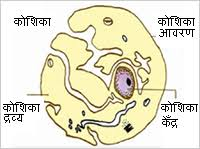

कोशिका

इस लेख में मानव शरीर से संबंधित उल्लेख है। मानव शरीर असंख्य सूक्ष्म इकाईयों से मिलकर बना है, जिन्हें कोशिकाएँ कहा जाता है। कोशिका शरीर का सूक्ष्मतम रूप है। यह शरीर की एक मूलभूत रचनात्मक एवं क्रियात्मक इकाई है, जो स्वतंत्र रूप से जीवन की क्रियाओं को चलाने की क्षमता रखती है। शरीर के विभिन्न अंगों की कोशिकाओं में भिन्नता होती है, परंतु समस्त कोशिकाओं की मूलभूत संरचना एकसमान ही होती है। ये इतनी सूक्ष्म होती हैं, कि इन्हें बिना माइक्रोस्कोप के देख सकना सम्भव नहीं है। इन्हें स्टेन करने के पश्चात् स्लाइड पर स्थित करके ही देखा जा सकता है। स्टेन करने से कोशिका के भिन्न-भिन्न भाग भिन्न-भिन्न रंग ग्रहण कर लेते हैं तथा सभी स्पष्ट एवं एक-दूसरे से भिन्न दिखाई देने लगते हैं। कोशिका की रचना के अंतर्गत कई-एक सम्मिलित अंग हैं, इन्हीं अंगों के सामूहिक रूप को कोशिका कहते हैं। कार्यों की विभिन्नता के कारण कोशिकाओं के आकार एवं आकृति में अंतर होता है, परंतु कुछ रचनात्मक विशिष्ट गुण उन सभी में समान रहते हैं।